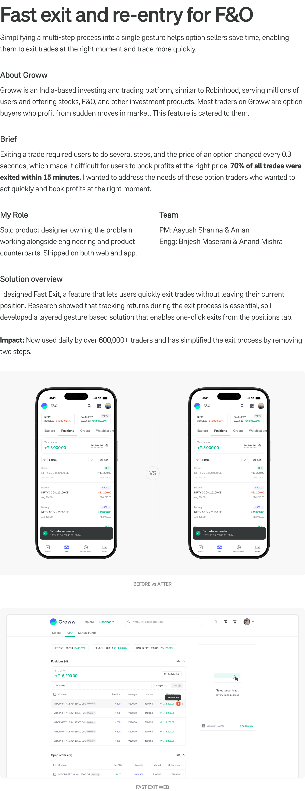
Simplifying a multi-step process into a single gesture helps option sellers save time, enabling them to exit trades at the right moment and trade more quickly.
Groww is an India-based investing and trading platform, similar to Robinhood, serving millions of users and offering stocks, F&O, and other investment products.
Exiting a trade required users to do several steps. 70% of all trades were exited within 15 minutes.
Solo product designer owning the problem working alongside engineering and product counterparts. Shipped on both web and app.
PM: Aayush Sharma and Aman. Engg: Brijesh Maserani and Anand Mishra.
Fast Exit lets users quickly exit trades without leaving their current position. Impact: used daily by over 600,000+ traders.
An option is a contract that gives you the right to buy or sell a stock at a specific price on or before a certain date, in exchange for a small upfront fee. Think of it like a down payment on a house, but it allows you to call dibs on the house. Buying an apple stock option lets you call dibs on the stock at that price.
Apple stock might be priced at $100, but an option could cost just $10, allowing people to trade with less money.
Options are very volatile, and this $10 premium can quickly rise to $20 or drop to zero in seconds. Therefore, decisions must be made rapidly. Option buyers take advantage of this volatility to make quick profits, so timing is crucial.
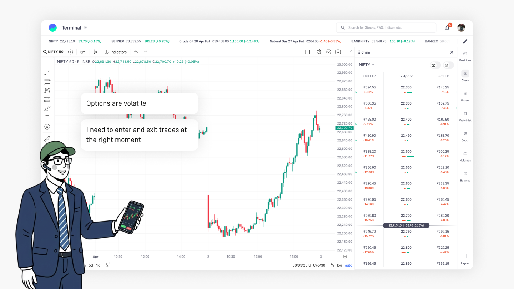
Trading options
Imagine you see a profit of $100, but by the time you finish the exit process, your profit drops to $80. This can be really disappointing for traders, as it feels like leaving money on the table. The multi-step process is causing delays.
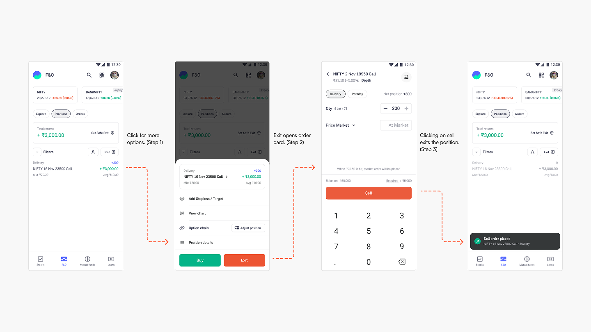
Current experience, step by step
Before Groww introduced derivatives, the main purpose of the app was stock investing. The current flow for placing an order is derived from stock experiences. Unlike stocks, derivatives are volatile, and when traders decide to exit their positions, they typically sell all of their shares. In fact, 85% of traders choose to exit their entire quantity when they want to leave a position.
Groww has launched a new feature called Exit All, which lets you choose and exit your positions at the best market price. This feature is great when you want to exit all your positions at once, but it doesn’t work if you only want to exit two trades out of four.
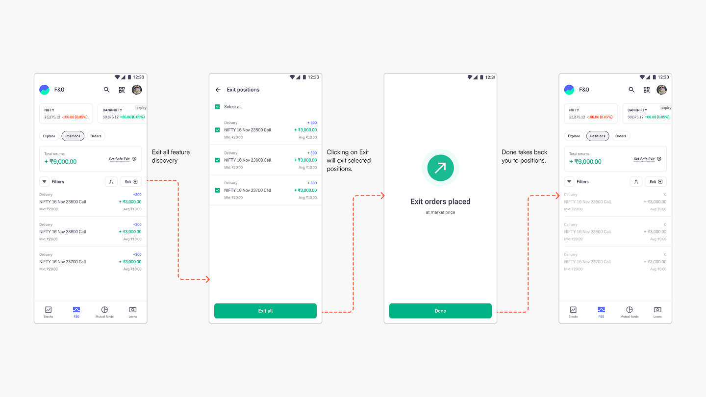
Exit all positions
Traders were struggling because the process to exit a position was too long. While the exit all feature was useful, it didn’t allow users to exit trades one by one.
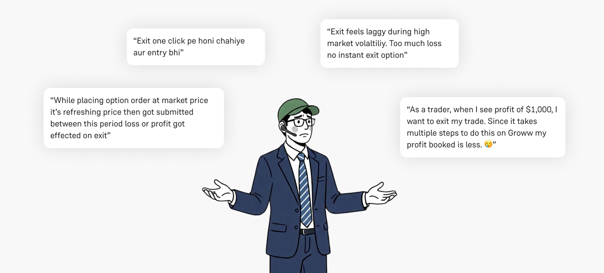
NPS Survey comments
Exit All lets users close multiple positions at once. An optional Fast Exit, can be enabled via settings, to close all trades on market price with one tap.
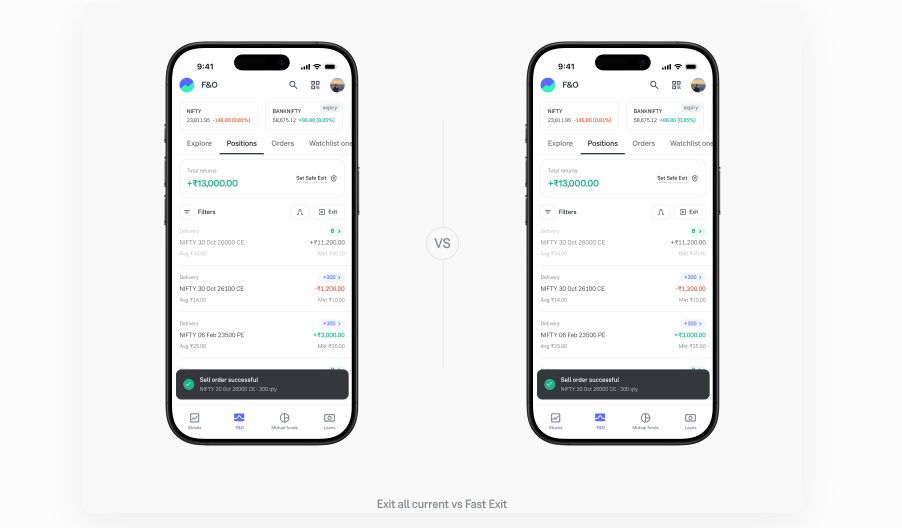
Exit all current vs Fast Exit
Learning: This allowed exiting with one click but did not solve the problem of selective exit. This solution can also cause errors, like accidentally exiting all positions when you did not mean to.
Clicking on an option gives you multiple actions you can take on. An instant exit button can be placed there to allow users to exit positions.
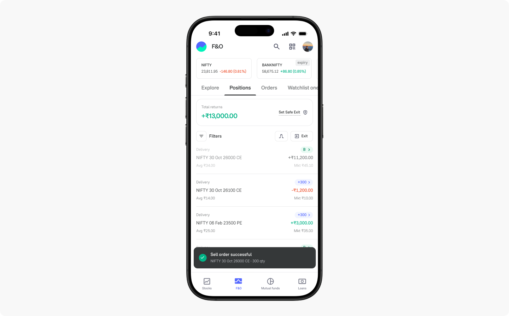
Current bottom sheet UI vs UI with instant exit
Learning: This was an elegant solution that allowed users to exit in two clicks. It was designed to prevent accidental clicks, but it still felt a bit slow. User testing showed that people prefer to see their total returns before exiting their positions, but the screen blocks that information.
Fun fact: Groww’s stakeholders approved this approach, but I felt I could improve it. I believed that exiting directly from the positions tab while tracking returns would be a better solution. I requested more time and moved forward.
I explored revealing Exit at market from the row itself—either by swiping the list item or by tapping a dedicated affordance on the right—so traders never lose sight of total returns on the positions tab.
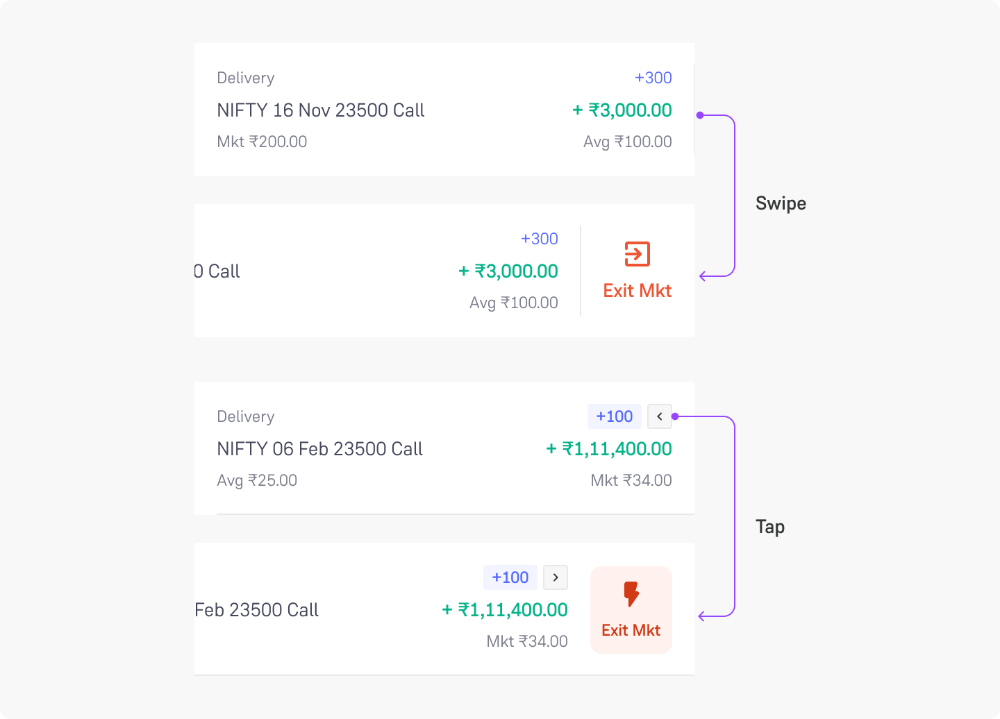
Fast Exit on Swipe
Swipe vs Tap: I decided to go ahead with tap instead of swipe. Swipe as an interaction was used to switch between different tabs on the app. Swiping on a position was interfering with swiping between tabs.
This solution turned out to be promising since it allowed user to exit the position while monitoring total returns. Few users even reported that they kept the drawer open and exiting the instant they saw $100 profit. One-click exit.
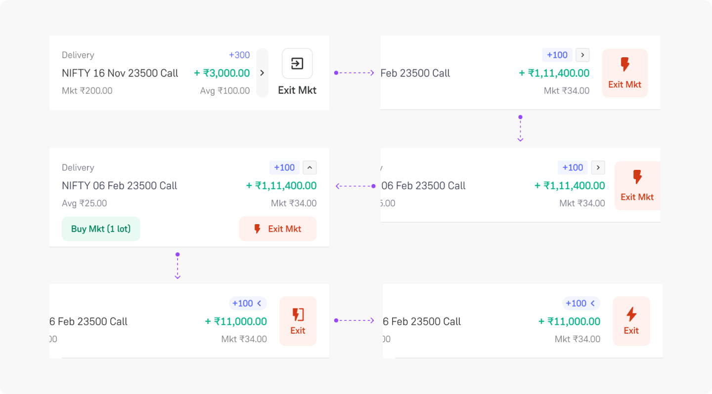
List item explorations
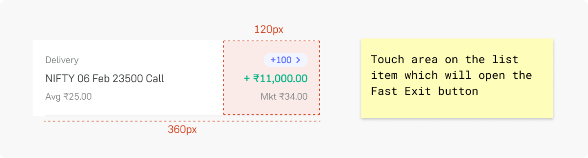
Tap areas: To define a clear mental mode for users I made sure that the entire right side of list item was clickable so users know where to tap to see fast exit button.
Traders can only open one side panel at a time. The team discussed whether to let users open multiple drawers simultaneously or just one at a time. I decided to allow only one side drawer to be open at a time. This choice keeps the positions tab UI clean and prevents accidental clicks.
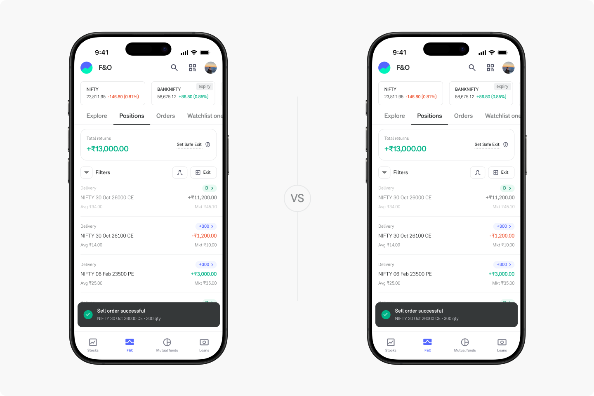
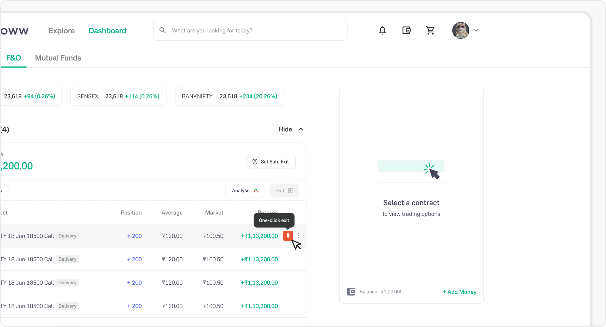
FAST EXIT WEB
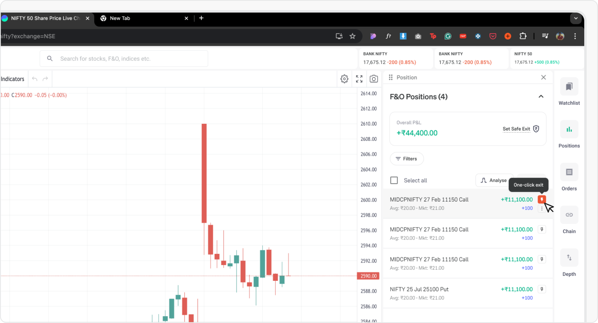
FAST EXIT WEB
Update: Fast exit was launched for all users on Groww by March 2025. It quickly became a top NPS promoter with 50,000+ daily users. However, I observed a similar issue when users tried to re-enter the same position.
What if users could re-enter the trade in a similar way?
Fast re-entry